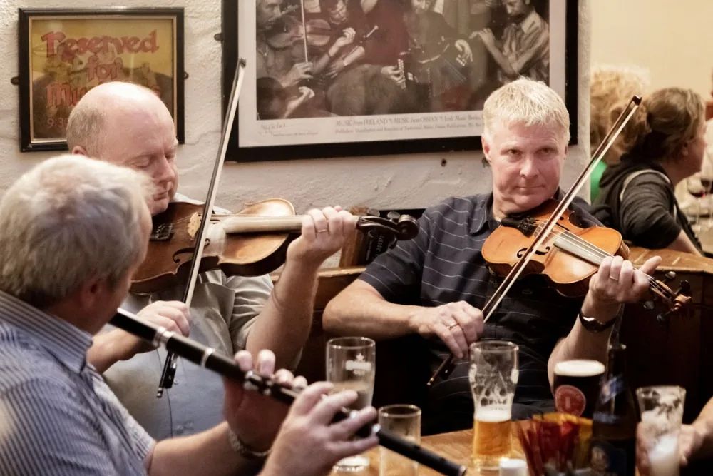
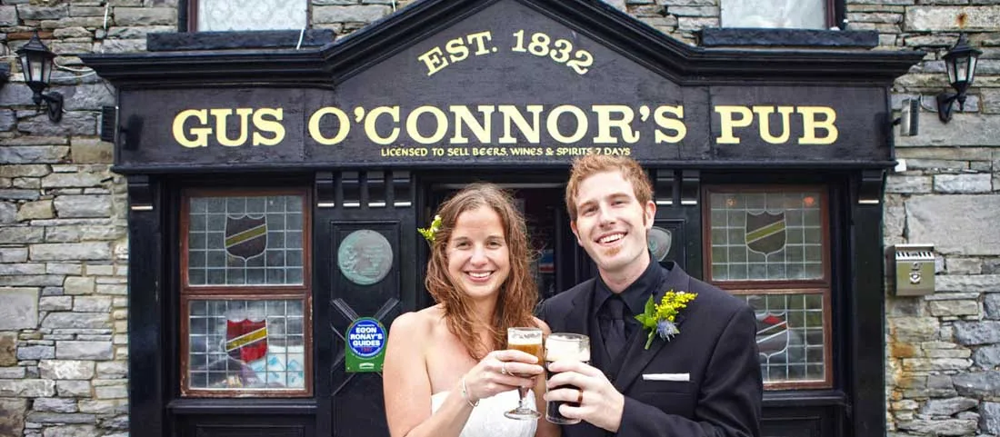

Kitchen hours
Breakfast9:30 – 12:00
Lunch12:30 – 17:00
Dinner17:00 – 21:00
Open 364 days a year. Hours from your public listings — corrected on day one.
Gus O'Connor let musicians play here before it was the done thing — and a village on the edge of the Atlantic became the trad capital of the world. The seafood lands at the pier, two hundred metres down the street.


“Musicians were looked down upon around here — Gus let them play anyway.”
Susan Shannon held one of the first pub licences granted to a woman in Clare. Her son Gus took the bar in 1956 and kept the door open to every fiddle that knocked. Folklore collectors were recording in this room by the 1930s. The session never really stopped.
Booked directly with us — confirmed within the hour, no commission to anyone.